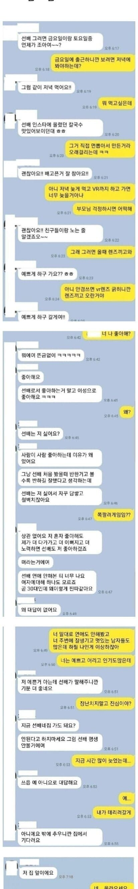

124 · 7 · 2 시간 전 · 원문

"자 여기 찍어요"
"이거 혼인신고ㅅ......"
"쓰읍"
"네"
수집 당시 댓글 8개
락스계 · 13 일 전
이건 무슨탬플릿이야? 씨발노맨즈스카이나해야겠다.
짖잘드럭ㅇ강나쇼 · 13 일 전
느금마
죠랄나따지짜 · 13 일 전
개붕이는 얼굴도 마음도 비틀렸네!
번째전생함 · 13 일 전
선배 어제 왜 강제로 했어요?
고오오급물리 · 13 일 전
락스 가져와
클리랑토리스랑 · 12 일 전
이상 피고인의 진술이였습니다.
일베쳐패고파 · 12 일 전
어디서 못된 것들 퍼왔네..
캬루룽 · 11 일 전
달달하구만
대한민국의 출산율에 잔뜩 기여해주렴
이건 무슨탬플릿이야? 씨발노맨즈스카이나해야겠다.